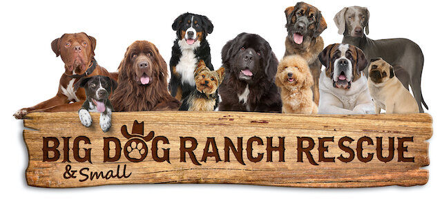
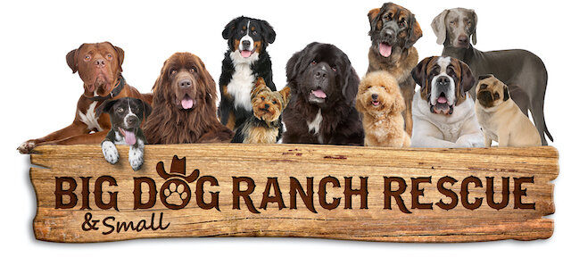
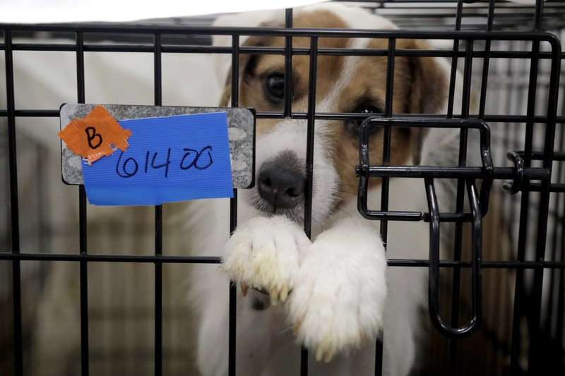
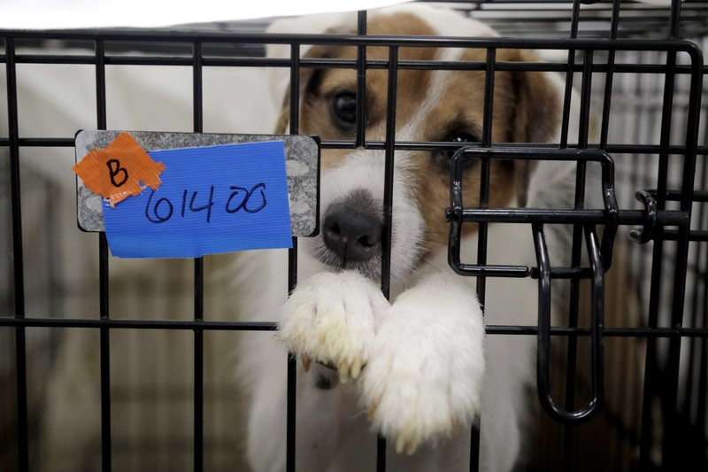

Florida’s Pet Adoption Shelters

Humane Society of North Central Florida’s
Created in 2018, our founding organizations have been dedicated to serving pets in Alachua County for more than 40 years. The Humane Society of North Central Florida is a limited intake, no-kill animal rescue shelter. The Humane Society of North Central Florida is an independent organization. As such, we do not receive funding from federal agencies, nor are we affiliated with any other state or national organizations such as the Humane Society of the United States or the ASPCA.
Gainesville, FL 32609
 


 
